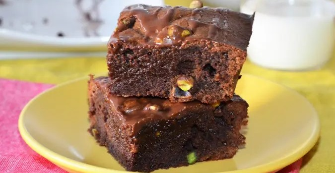
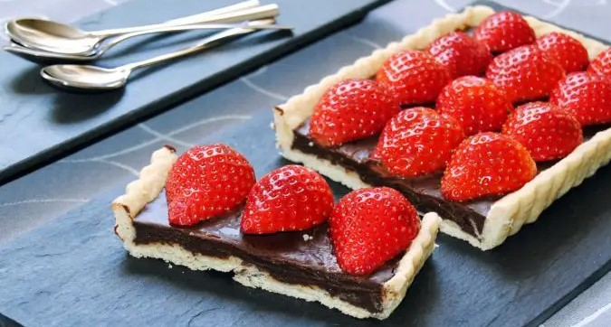
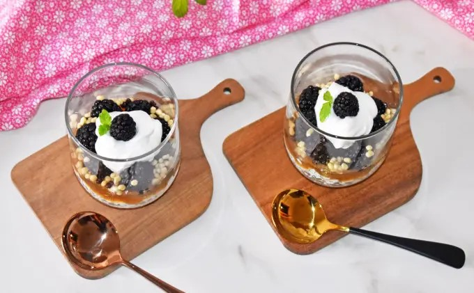
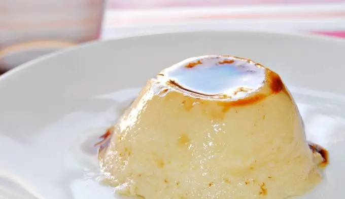

Para los apasionados por el chocolate, que no somos pocos,
les proponemos una serie de recetas fáciles de hacer y que
van a satisfacer totalmente el paladar de los ‘chocoadictos’.
En le mercado hay variedad de chocolates que podemos consumir,
sin embargo, no todos los chocolates son iguales cuando intentamos
beneficiarnos con su consumo, por ello, nuestro consejo es que siempre
escojas el chocolate más puro posible. El chocolate más sano es el negro
y el que concentra un porcentaje elevado de cacao (70% o superior),
pues a mayor pureza, menor cantidad de azúcares añadidos y más antioxidantes.
Recetas de Postres de Chocolate
Brownie de Chocolate y Pistachos:
Si adoras los pistachos no dudes en preparar este postre con
tu chocolate favorito con un elevado porcentaje de cacao y
una buena manteca de pistachos, que sea 100% pistacho.
Donuts de Avena y Chocolate:
Te gustan los donuts y a la hora de comer además de rico quieres
que sea saludable, que te parece si pruebas hacer estos fáciles y
deliciosos bizcochitos con avena y chocolate.
Tarta de Chocolate y Fresas:
Base de masa quebrada fina y crujiente, con relleno de un cremoso
ganache de chocolate y unas fresas será irresistible.
RECETA 1: Brownie de Chocolate y Pistachos

Ingredientes: Molde 16 x 12 cm
Para este postre se precisa:
60 gramos de chocolate negro para fundir
110 gramos de manteca de pistachos de textura ligera
2 huevos
90 gramos de azúcar
30 gramos de harina (trigo o avena)
Un puñado de pistachos pelados
Cantidad necesaria de mantequilla (para el molde).
Proceso de elaboración:
Enciende el horno a 200º C con calor arriba y abajo, prepara el molde
untándolo con la mantequilla, sin excesos.
Pon en un bol la harina tamizada con el azúcar y los huevos. En otro
bol, pon el chocolate con la manteca de pistachos y ponlo un minuto
en el microondas (o fúndelo al baño maría).
Si no es suficiente tiempo para fundir el chocolate, ponlo unos
segundos más, pero aunque quede algún trozo de chocolate aparentemente
entero, con el calor que tiene y mezclando se puede fundir.
Une las dos preparaciones y mezcla con una espátula o lengua de silicona. Cuando
esté todo bien integrado, incorpora un puñado de pistachos enteros y vuelve a mezclar.
Introduce el molde en el horno cuando haya alcanzado la temperatura indicada, entonces bájala a 180º C.
Hornea durante 20 minutos aproximadamente. Retira el brownie del horno y deja enfriar a temperatura ambiente.
RECETA 2: Donuts de Avena y Chocolate
Ingredientes: 8 unidades
Para este postre se precisa:
100 gramos de avena finamente molida
40 gramos de leche en polvo
20 gramos de cacao puro en polvo
1 cuchara de café de levadura de repostería
2 huevos XL
100 gramos de leche evaporada
Unas gotas de extracto de vainilla
Cantidad necesaria de edulcorante líquido (al gusto).
Para la cobertura:
125 gramos de chocolate fondant 80% de cacao
1 cuchara de postre de aceite de coco.
Proceso de elaboración:
Pon en un bol la harina fina de avena (utilizamos esta), la leche en polvo,
el cacao puro y la levadura de repostería. Mezcla con las varillas manuales
y añade en el centro los huevos ligeramente batidos, la leche evaporada
y el extracto de vainilla. Para endulzar, añade el edulcorante que utilices
normalmente, en este caso hemos utilizado edulcorante líquido y la cantidad
al gusto, nuestra forma de calcularlo es la dosis que añadimos a un café o
a un yogur por cada bizcochito-donut.
Mezcla bien con las varillas hasta obtener una masa fina y homogénea,
entonces viértela en los moldes de donuts multicavidades de silicona, sin llenarlos
hasta arriba, deja algo menos de ¼. Si sólo tienes un molde, tendrás que hacer los
dos restantes después, pero también puedes gastar la masa que queda poniéndola en
una taza, como si fuera un mini mug cake.
Introduce el molde de donuts en el microondas y programa 1’30 minutos a 800 vatios.
Es posible que con este tiempo no hayan subido (es el tiempo que empleamos con otras
masas de donuts abizcochados), en ese caso, programa otros 30 segundos. Es preferible
quedarse cortos con el tiempo que pasarse, pues quedarían bizcochitos secos y duros.
Y es imposible dar el tiempo exacto de cocción porque como con los hornos convencionales,
cada microondas va a su ritmo.
Así que los donuts pueden estar listos en un tiempo de entre 1’30 y 2’30 minutos
(a distinta potencia, también distintos tiempos). Una vez que estén hechos,
se desmoldarán fácilmente, déjalos enfriar y prepara el chocolate para bañarlos.
Pon el chocolate troceado en un bol y en el microondas, en tiempos de 30 segundos,
hasta que esté casi fundido. Cuando aún queden trocitos sin fundir, bate con una
espátula para que el propio calor lo funda. Añade al chocolate fundido el aceite
de coco y mezcla bien.
Baña los donuts de avena y chocolate en el chocolate fundido y ve
colocándolos sobre papel vegetal, deja que el chocolate se endurezca
en un lugar fresco.
RECETA 3: Tarta de Chocolate y Fresas

Ingredientes:
Para este postre se precisa:
1 base de masa quebrada sin huevo
180 gramos de chocolate al 70%
180 gramos de nata (30-35% mg)
Cantidad necesaria de fresas.
Proceso de elaboración:
Prepara la masa como explicamos en la receta de masa quebrada, hornéala en blanco
(recuerda pinchar la base con un tenedor varias veces para que no se infle) hasta
que tome un poco de color y esté crujiente. Deja enfriar y después desmóldala.
Prepara el relleno de chocolate, pon en un cazo la nata, llévala a ebullición
y baja el fuego, deja cocer uno o dos minutos, moviendo para que no se agarre.
Pon el chocolate troceado en un cuenco y vierte sobre él la nata recién
retirada del fuego. Mezcla con una lengua o con las varillas hasta que el chocolate
se haya fundido y deja reposar hasta que esté templado.
Vierte entonces el ganache en el molde, deja enfriar completamente
y cúbrelo con film transparente. Deja reposar en el frigorífico un par de horas.
Lava las fresas, sécalas bien y retira el pedúnculo. A continuación córtalas
por la mitad. Retira la base de la tarta del frigorífico, el chocolate estará
más sólido, pero cremoso. Coloca las fresas con la parte del corte hacia abajo.
Disfrute del dulce de la naturaleza: Las Frutas
La fruta ideal para el postre es la fruta fresca. Es la que
ofrece un rendimiento 100% natural y una experiencia sensorial
inigualable, muy utilizada y valorada en la elaboración postrera.
No siempre apetece consumir fruta de la misma forma, una y otra vez,
especialmente si tenemos niños en casa, quienes se aburren rápidamente
de repetir las mismas comidas. Por eso, es recomendable innovar, y
presentar la fruta de formas diferentes y más atractivas, por ejemplo,
como postres divertidos, saludables y deliciosos.
Recetas de Postres de Frutas
Magdalenas de Manzana y Nueces:
Si adoras la manzana este postre es fácil.
Sorprende a los tuyos con unas deliciosas magdalenas.
Con un toque de canela realmente conquistarán a quienes las prueben.
Pastel de Melocotón y Azafrán:
Una tarta para degustar tibia o fría, sola o acompañada de un poco
de yogur griego o una bola de helado. Aprovecha los melocotones
en la elaboración de este delicioso postre.
Helado de Yogur y Frutos Rojos:
Cucuruchos, copas, tarrinas, tulipas de galleta… sirve el helado de
yogur y frutos rojos como gustes y disfruta decorándolo con frutos secos
garrapiñados, siropes de caramelo, chocolate o frutas, nata montada,
barquillos, bolitas de chocolate…
RECETA 4: Magdalenas de Manzana y Nueces:
Ingredientes: 18 comensales
Para este postre se precisa:
175 gramos de azúcar
60 gramos de leche
190 gramos de aceite de girasol
210 gramos de harina de repostería
10 gramos de levadura química
1 cuchara de café de canela (opcional)
Una pizca de sal
65 gramos de manzana
50 gramos de nueces.
Proceso de elaboración:
Casca los huevos en un cuenco y añade el azúcar,
bate con las varillas hasta que empiecen a espumar.
Añade a continuación la leche y el aceite y vuelve a
batir para que se integren los dos ingredientes.
Tamiza la harina con la levadura e incorpórala
a la elaboración anterior, añade también la canela y
una pizca de sal, bate de nuevo hasta conseguir una
masa homogénea y fina. Cubre el cuenco con film transparente
y reserva en el frigorífico durante una hora aproximadamente.
Precalienta el horno a 240º C con calor arriba y abajo.
Prepara la manzana y las nueces para incorporarlas a la masa,
las nueces trocéalas y la manzana córtala en pequeños daditos.
Retira la masa de las magdalenas del frigorífico e incorpora la fruta y las nueces.
Mezcla bien.
Pon las cápsulas o moldes de papel de las magdalenas en moldes rígidos y vierte
la masa llenando dos tercios. Puedes ayudarte con una cuchara de helado o hacerlo
con una jarra de repostería.
Introduce las magdalenas en el horno y baja la temperatura a 210º C. Hornea las
magdalenas durante 15 minutos o hasta que estén doradas. Cuando las retires del
horno, déjalas enfriar sobre una rejilla.
RECETA 5: Pastel de Melocotón y Azafrán
Ingredientes: 6-8 comensales
Para los melocotones
50 gramos de mantequilla
50 gramos de azúcar
3 melocotones.
Para el bizcocho
200 gramos de harina
8 gramos de levadura de repostería
Una pizca de sal
100 gramos de azúcar
2 huevos (L)
200 gramos de suero de leche (Buttermilk)
75 gramos de aceite de girasol
Una pizca de azafrán.
Proceso de elaboración:
Precalienta el horno a 180º C con calor arriba y abajo. Pela los melocotones y
córtalos en gajos, pon una sartén o un molde especial para tarta tatin
(que puede utilizarse en el fuego y en el horno) a calentar con la mantequilla
y los 50 gramos de azúcar, deja que se fundan y tomen un ligero color dorado,
entonces retira del fuego y añade los melocotones.
Tanto si utilizas un molde para tatin, como si de la sartén tienes que pasar los
melocotones a un molde apto para el horno, coloca los gajos de forma ordenada.
Mezcla la harina tamizada con la levadura, la pizca de sal y el azúcar.
Por otro lado mezcla los huevos batidos con el suero de leche, el aceite
y el azafrán. Vierte esta preparación en la de la harina y mezcla
cuidadosamente, hasta obtener una masa homogénea.
Vierte la masa lentamente y con cuidado sobre los melocotones,
repartiéndola bien y dejando una capa lisa. Introduce el molde en
el horno y hornea el pastel durante 30-35 minutos, verás que la
masa de bizcocho ha subido y se ha dorado. Haz la prueba del
palillo para comprobar que está bien cocido.
Retira el pastel de melocotón del horno y deja reposar sólo 5 minutos,
entonces desmolda (si lo dejas enfriar costará más de desmoldar si se
hace un caramelo duro).
Los yogures habitualmente están en el frigorífico, y si prevés elaborar
este helado, no estará de más poner la leche de coco también en el
frigorífico, aunque los frutos rojos, al estar congelados, enfriarán
totalmente la mezcla.
Los yogures habitualmente están en el frigorífico, y si prevés
elaborar este helado, no estará de más poner la leche de coco
también en el frigorífico, aunque los frutos rojos, al estar congelados,
enfriarán totalmente la mezcla.
Es así de sencillo, poner todos los ingredientes en el recipiente
elegido, el yogur, los frutos rojos, la leche de coco y el azúcar invertido,
y triturar hasta obtener una crema fina. Si se desean eliminar las semillas
de los frutos rojos se pueden triturar aparte, colar y después incorporar a
la mezcla de yogur.
Si haces el helado de forma manual, pon el preparado en un recipiente amplio
y con tapa hermética (de un material que sea buen conductor de frío, nosotros
utilizamos unos de acero inoxidable), introdúcelo en el congelador y cada hora
aproximadamente, sácalo y bátelo para que se vaya aireando y congelando de forma
homogénea, evitando la formación de cristales de hielo.
Si haces el helado de yogur y frutos rojos en la heladora, ponla en marcha antes
de empezar a verter el preparado por el bocal, deja que la heladora trabaje
unos 30-45 minutos y obtendrás un helado tipo soft. Puedes pasarlo a un recipiente
e introducirlo en el congelador para que se endurezca más.
La felicidad a veces tiene forma de Bizcocho
Somos muchos, los que disfrutamos con un buen bizcocho o tarta.
Es más, cuando nos apetece un rico bizcocho, nos imaginamos el típico,
que es súper esponjoso. En pastelería tenemos numerosas recetas básicas
a partir de las cuales podremos crear todo tipo de postres. Este es el
caso del bizcocho, uno de los clásicos de la repostería. Puede usarse por
sí mismo, pero también puede ser la base para crear tartas y
elaboraciones más complejas.
Recetas de Bizcochos y Tartas
Bizcocho de Chocolate:
Bizcocho sin harinas, es una receta baja en calorías que te sorprenderá,
pues lleva pocos ingredientes, no muy comunes para hacer bizcochos (leche en polvo),
y queda esponjoso y tierno hasta de un día para otro. Puedes decorarlo con fruta
fresca y un poco de chocolate fundido, como hemos hecho nosotros, con fresas
troceadas, piñones y chocolate negro.
Bizcocho con Leche de Coco:
Es fácil, rápido y esponjoso. Vas a tener que incorporar una nueva receta a vuestro
cuaderno de repostería casera, es ideal para tomar en cualquier ocasión, tiene un
sabor y una textura que es una delicia, encanta a los niños y también a los mayores,
aunque sean poco golosos.
Tarta de Tres Quesos:
Súper proteica y especialmente deliciosa, prueba esta receta saludable
que te va a entusiasmar. Ideal para toda la familia, incluso para quienes tienen
intolerancia al gluten, para quienes no quieren consumir azúcar… en definitiva,
tienes que preparar esta receta saludable que te va a encantar, y te saldrá bien
aunque sea la primera tarta que haces. Decora al gusto, con mermelada, frutos
rojos, yogur griego, nata montada, un poco de azúcar glas…
RECETA 7: Bizcocho de Chocolate
Ingredientes: Molde rectangular 18 cm
Para este postre se precisa:
80 gramos de leche en polvo
9 gramos de levadura de repostería
5 gramos de cacao en polvo
Cantidad necesaria de edulcorante líquido (u otro endulzante al gusto)
1 huevo L
50 gramos de agua.
Para decorar
3-4 fresones
Cantidad necesaria de piñones
3 onzas de chocolate negro.
Proceso de elaboración:
Mezcla la leche en polvo, la levadura de repostería y el cacao en polvo.
Añade el edulcorante o endulzante deseado, el huevo y el agua.
También puedes poner leche en lugar de agua, pero el sabor del
chocolate quedará más suave.
Bate hasta obtener una mezcla fina y homogénea, viértela en un molde de
silicona o en un molde antiadherente untado con un poco de mantequilla,
e introdúcelo en el horno precalentado a 180º C.
Hornea el bizcocho durante unos 15 minutos, verás que en el horno sube
por efecto de la levadura, pero después bajará. Si bates la clara del
huevo a punto de nieve puede quedar más subido.
Retira el bizcocho del horno y deja enfriar antes de desmoldar.
RECETA 8: Bizcocho con Leche de Coco
Ingredientes: Molde de 16 cm
Para este postre se precisa:
175 gramos de harina
9 gramos de levadura química
175 gramos de azúcar
3 huevos (unos 170 gramos)
175 gramos de leche de coco (de lata)
Unas gotas de extracto de vainilla
Cantidad necesaria de chips de coco.
Para el molde
Mantequilla
Harina
Azúcar.
Proceso de elaboración:
Pon en un bol la harina tamizada con la levadura química. En otro bol
pon los huevos y el azúcar y bate con las varillas hasta que empiecen
a espumar. Entonces añade la leche de coco y el extracto de vainilla,
vuelve a batir para que todos los ingredientes se integren.
Mezcla los ingredientes secos y los líquidos, añade el extracto de vainilla
y bate suavemente con las varillas hasta obtener una masa líquida, algo
densa, pero sin grumos. Deja reposar mientras se calienta el horno a
180º C con calor arriba y abajo.
Prepara un molde antiadherente de 16 centímetros de diámetro, primero
úntalo con mantequilla, a continuación espolvorea harina y repártela
por todo el molde, después sacúdelo para que se caiga (en el
fregadero, por ejemplo) el exceso de harina, la que no ha quedado
adherida a la mantequilla. Repite la misma operación con el azúcar.
Vierte la masa del bizcocho de coco en el molde y reparte los
chips de coco en su superficie. Cuando el horno haya alcanzado los 180º C,
introduce el molde en el horno, en la parte inferior para que los chips
de coco no se quemen por estar muy cerca del calor que le llega directo
de la parte de arriba.
Hornea el bizcocho durante 30 minutos, pasado este tiempo comprueba
con un palillo que está bien cocido, éste debe salir limpio al
pinchar el interior del bizcocho. Entonces retira el molde del
horno y deja enfriar a temperatura ambiente.
RECETA 9: Tarta de Tres Quesos
Ingredientes: Molde 22 cm
Para este postre se precisa:
5 huevos M
270 gramos de queso crema tipo Philadelphia
200 gramos de queso cottage
250 gramos de queso fresco de Burgos
120 gramos de proteína en polvo sabor vainilla
250 gramos de agua
Cantidad necesaria de edulcorante (unos 40-50 gramos de eritritol o
unos 80-100 gramos de azúcar).
Proceso de elaboración:
Casca los huevos uno a uno, poniéndolos primero en un cuenco, sin juntarlos
al resto al salir de la cáscara. No suele haber problema, pero de este modo,
si sale un huevo malo no hay que tirar todos porque están mezclados.
Una vez que estén todos los huevos en el bol grande (o en el recipiente
de la batidora o procesador de alimentos) añade el queso tipo Philadelphia,
el queso cottage, el queso de burgos y la proteína en polvo. En caso de no
utilizar o disponer de este producto, puedes sustituirlo por leche en polvo.
Añade el agua y el edulcorante que desees, teniendo en cuenta que si usas
proteína con sabor ya está endulzada. Tritura hasta obtener una masa fina
y homogénea. Viértela en un molde untado con mantequilla o encamisado con
papel vegetal.
Introduce el molde en el horno caliente a 165º C, colócalo a altura media
y hornea durante 60-70 minutos. Haz la prueba del palillo para comprobar
que la tarta ha cuajado, y si la quieres con el interior cremoso (sin
terminar de cocinar), haz la prueba unos 15 minutos antes.
Retira el molde del horno y deja enfriar la tarta a temperatura ambiente. Se puede
servir templada o casi fría si se quiere más cremosa, pero si se desea disfrutar
de la tarta de queso de siempre, consistente e igualmente cremosa, pero
no semilíquida, deja reposar en la nevera un par de horas o hasta el día siguiente.
Fast and Delicious
Acabar las comidas con la típica pieza de fruta o un yogur está muy bien, pero
a veces apetece otra cosa. También hay momentos en que tu cuerpo te está pidiendo algo
dulce y lo que necesitas hacer es un postre rapidito porque te pasan por la cabeza
todo tipo de malas ideas: donuts, helado, chocolate, galletas, gominolas... De
pronto te entran unas ganas incontrolables de acercarte corriendo a la tienda
de chuches de la esquina; sin embargo, una alternativa más saludable sería
elaborar un postres que sacie tu deseo de consumir azúcar. Aquí tienes recetas
de postres que, además de irresistibles, se hacen fácilmente en un plis plas.
Recetas de Postres Rápidos
Postre de Cuchara de Requesón, Manzana y Moras: (5 minutos)
Comprueba por ti misma como con apenas tres ingredientes tan accesibles
como el requesón, la manzana y la mora, pueden convertirse en un postre
estrella.
Flan de Huevo: (menos de 2 minutos en el microondas)
El flan de huevo es un postre clásico que se hace en todos los hogares desde
tiempo inmemorable y que a todos nos gusta y con una receta rápida podrás disfrutar
de este.
Donuts de avena y yogur: (5-10 minutos)
El resultado son unos tiernos, deliciosos y saludables "donuts"o "donetes", que se hacen
en el microondas y que son ideales para toda la familia. Si quieres comer postre pero
que no sea un dulce cargado de azúcares y grasas, toma nota de la receta.
RECETA 10: Postre de Cuchara de Requesón, Manzana y Moras: (5 minutos)

Ingredientes: 4 personas
Para este postre se precisa:
500 gramos de requesón
240 gramos de compota de manzana
35-40 moras frescas
2-3 cuchara sopera de bolitas de chocolate crujientes
80 gramos de yogur colado o griego
Cantidad necesaria de azúcar o edulcorante.
Proceso de elaboración:
Si la compota es muy dulce, posiblemente no necesites endulzar el requesón
que se sirve en la base del vaso, y si lo quieres muy dulce, añade un poco
de azúcar o edulcorante al requesón y mezcla bien.
La compota de manzana debe estar fría para el servicio de este vasito
de postre, y las moras lavadas y bien secas. Las bolitas de chocolate
crujiente se pueden elegir de muchos tipos, las nuestras son sin azúcar
y hechas con base de soja, por lo que son ricas en proteínas.
Elige un buen yogur griego o haz yogur colado, conocido también como
labneh o hangop. Endúlzalo al gusto y procede al servicio, que puedes
hacerlo en vasos transparentes, copas de postre o boles.
Sirve como base el requesón y a continuación la compota de manzana,
cubre totalmente con las moras colocadas de forma ordenada,
reparte las bolitas de chocolate crujientes y corona con el yogur
colado. Termina decorando con otra mora y unas hojas de hierbabuena si lo deseas.
RECETA 11: Flan de Huevo: (menos de 2 minutos en el microondas)

Ingredientes: 6 comensales
Para este postre se precisa:
500 ml de leche
3 yemas de huevo
2 huevos (L)
150 gramos de azúcar
Extracto de vainilla
Caramelo líquido.
Proceso de elaboración:
Como la idea es preparar un flan de huevo rápido, la leche no la aromatizamos
como en el flan de huevo tradicional, pero evidentemente se puede hacer,
preparar primero la infusión de leche con canela y piel de limón.
Pon en un cuenco las yemas y los huevos enteros, añade el azúcar y bate
hasta que hagan un poco de espuma, incorpora la leche fría y el extracto
de vainilla, bate de nuevo para mezclar bien.
Vierte un poco de caramelo en los moldes de flan de silicona y repártelo
por la base y los laterales, no hay que poner mucho, luego se hace más líquido.
Rellena las flaneras dejando al menos dos dedos para que tenga espacio para
subir cuando cuece, y tápalas con film transparente apto para microondas.
Pon un vasito de flan en el microondas y programa 1’30 minutos a 800 vatios,
como es el primero, no lo pierdas de vista puede subir demasiado y salirse.
Cumplido el tiempo, retira el flan del microondas con cuidado de no quemarte,
destápalo para comprobar que ha cuajado, o si en tu microondas necesita algunos
segundos más.
RECETA 12: Donuts de avena y yogur: (5-10 minutos)
Ingredientes: 6 comensales
Para este postre se precisa:
100 gramos de copos de avena molidos
5 gramos de levadura de repostería
Piel de media naranja
Una pizca de sal
2 huevos
60 gramos de aceite de oliva virgen extra de sabor suave (o mantequilla fundida)
40 gramos de yogur griego
Cantidad necesaria de edulcorante líquido (u otro endulzante equivalente a unos 40 gramos de azúcar)
Unas gotas de extracto de vainilla
20 gramos de almendra granillo.
Para el acabado:
Canela en polvo
Leche en polvo.
Proceso de elaboración:
Pon en un bol la avena molida y añade la levadura, la piel de naranja y
la pizca de sal, mezcla y prepara el resto de ingredientes. Incorpora
los huevos ligeramente batidos, el aceite o la mantequilla, el yogur y
el edulcorante.
Como indicamos en los ingredientes, puedes utilizar edulcorante líquido o en
granillo, como azúcar de abedul o eritritol, por ejemplo), la cantidad
varía según el endulzante que se utilice, así que si no sabes cuánto sería
el equivalente, nuestro truco es calcular la cantidad de edulcorante que ponemos
a un yogur y multiplicar por las raciones, en este caso seis.
Añade también el extracto de vainilla y la almendra en granillo, que
ofrecerá un contraste de textura entre la esponjosa miga de estos ‘donuts’.
Mezcla de nuevo con las varillas manuales, hasta obtener una masa densa y homogénea.
Vierte la masa en el molde de silicona con forma de rosquilla, pero también puedes
utilizar un molde multicavidad con cualquier otra forma. Asienta bien la masa
dejándola caer firme pero cuidadosamente, sobre la mesa de trabajo, dos o tres
veces. Introduce el molde en el microondas y programa 1’30 minutos a 800 vatios.
Si al retirarlo ves que la superficie no se ha cocido, ponlo 30 segundos más.
Finalizada la cocción, espera unos minutos antes de desmoldar los donuts y
ponlos sobre una rejilla para que se enfríen.
Puedes terminar estos donuts o donetes saludables con un poco de canela en
polvo espolvoreada, con leche en polvo le puedes dar un contraste blanco.
También puedes espolvorear con cacao en polvo o cubrir con un baño de chocolate.